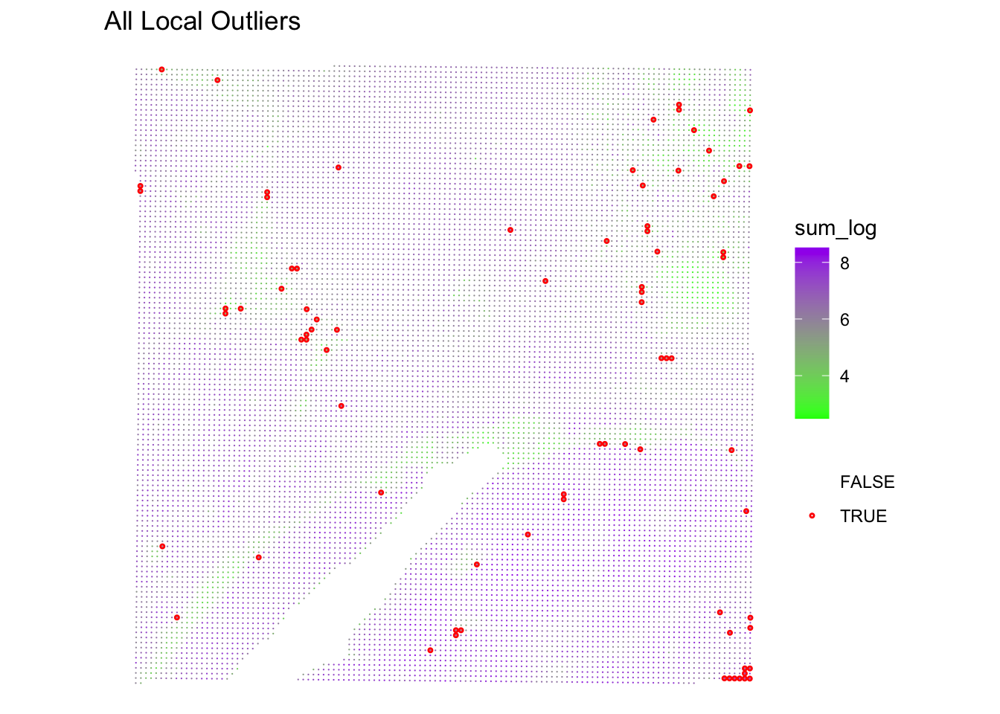

library(SpatialExperiment)
library(qs2)
library(SpotSweeper)
library(scuttle)
library(ggplot2)
library(escheR) # For spatial plotting
library(HDF5Array)Exercise 2
Quality Control using SpotSweeper
In this second exercise, we will focus on the critical step of quality control (QC) for spatial transcriptomics data. Using the SpotSweeper package, we will learn how to identify and handle low-quality spots and spatial artifacts, which is essential for ensuring the reliability of downstream analyses. We will calculate various QC metrics, detect local outliers, and visualize the results to gain a comprehensive understanding of data quality.
Learning Objectives
By the end of this exercise, you will be able to:
- Load a
SpatialExperimentobject from a.qsfile. - Calculate per-spot QC metrics.
- Identify local outliers based on various QC metrics.
- Detect spatial artifacts using
SpotSweeper. - Visualize QC metrics and detected artifacts.
Libraries
Data Object
In this section, we will load our SpatialExperiment object, which has been saved as a .qs2 file, and prepare it for quality control analysis.
# Load the SpatialExperiment object from the .qs2 file.
# This object contains the processed spatial transcriptomics data.
spe <- qs_read("results/01_spe.qs2", nthreads = 1)
# Change row names from gene IDs to gene symbols for easier interpretation.
# This assumes 'Symbol' is a column in the rowData of the SpatialExperiment object.
rownames(spe) <- rowData(spe)$Symbol
# Identify mitochondrial transcripts. These are often used as a QC metric.
# Genes starting with "MT-" are typically mitochondrial.
is.mito <- rownames(spe)[grepl("^MT-", rownames(spe))]
# Calculate per-spot (per-cell) QC metrics using scuttle's addPerCellQCMetrics function.
# This adds metrics like sum (total counts), detected (number of detected genes),
# and mitochondrial gene percentage to the colData of the SpatialExperiment object.
spe <- scuttle::addPerCellQCMetrics(spe, subsets = list(Mito = is.mito))
# Display the column names of the colData to see the newly added QC metrics.
colnames(colData(spe)) [1] "barcode" "in_tissue" "array_row"
[4] "array_col" "bin_size" "sample_id"
[7] "sum" "detected" "subsets_Mito_sum"
[10] "subsets_Mito_detected" "subsets_Mito_percent" "total" Local Outlier Detection
Here, we identify local outliers based on common QC metrics such as library size, number of detected genes, and mitochondrial percentage. localOutliers from SpotSweeper helps in identifying spots that deviate significantly from their local neighborhood.
Note: this takes about 10 minutes to run. Have a coffee.
# Identify local outliers based on library size ("sum" of counts).
# Spots with unusually low library size compared to their neighbors will be flagged.
spe <- localOutliers(spe,
metric = "sum",
direction = "lower",
log = TRUE
)
# Identify local outliers based on the number of unique genes detected ("detected").
# Spots with an unusually low number of detected genes will be flagged.
spe <- localOutliers(spe,
metric = "detected",
direction = "lower",
log = TRUE
)
# Identify local outliers based on the mitochondrial gene percentage.
# Spots with an unusually high mitochondrial percentage will be flagged.
spe <- localOutliers(spe,
metric = "subsets_Mito_percent",
direction = "higher",
log = FALSE
)
# Combine all individual outlier flags into a single "local_outliers" column.
# A spot is considered a local outlier if it's flagged by any of the above metrics.
spe$local_outliers <- as.logical(spe$sum_outliers) |
as.logical(spe$detected_outliers) |
as.logical(spe$subsets_Mito_percent_outliers)Question 1
How many spots were identified as local outliers based on the combined criteria?
Answer
# Count the number of spots flagged as local outliers.
table(spe$local_outliers)Visualization of QC Results
Visualizing the QC metrics and detected artifacts is crucial for understanding the quality of your spatial transcriptomics data.
# Plot the spatial distribution of local outliers.
# Spots flagged as local outliers will be highlighted.
plotQCmetrics(spe,
metric = "sum_log", outliers = "subsets_Mito_percent_outliers", point_size = 0.4,
colors = c("green", "purple"),
stroke = 0.75
) +
ggtitle("All Local Outliers")
# Plot the spatial distribution of local outliers.
# Spots flagged as local outliers will be highlighted.
plotQCmetrics(spe,
metric = "sum_log", outliers = "local_outliers", point_size = 0.4,
stroke = 0.75
) +
ggtitle("All Local Outliers")
Question 3
Plot the spatial distribution of the artifact column identified by SpotSweeper.
Answer
# Plot the spatial distribution of the detected artifacts.
plotQCmetrics(spe,
metric = "subsets_Mito_percent", # You can choose any relevant metric to display
outliers = "artifact",
point_size = 1.1
) +
ggtitle("Detected Spatial Artifacts")
Important
Key Takeaways:
scuttle::addPerCellQCMetricsprovides essential per-spot QC metrics.SpotSweeper::localOutliershelps identify individual problematic spots.SpotSweeper::findArtifactsis powerful for detecting spatially coherent regions of poor quality.- Visualizing QC results is critical for data interpretation and downstream analysis decisions.